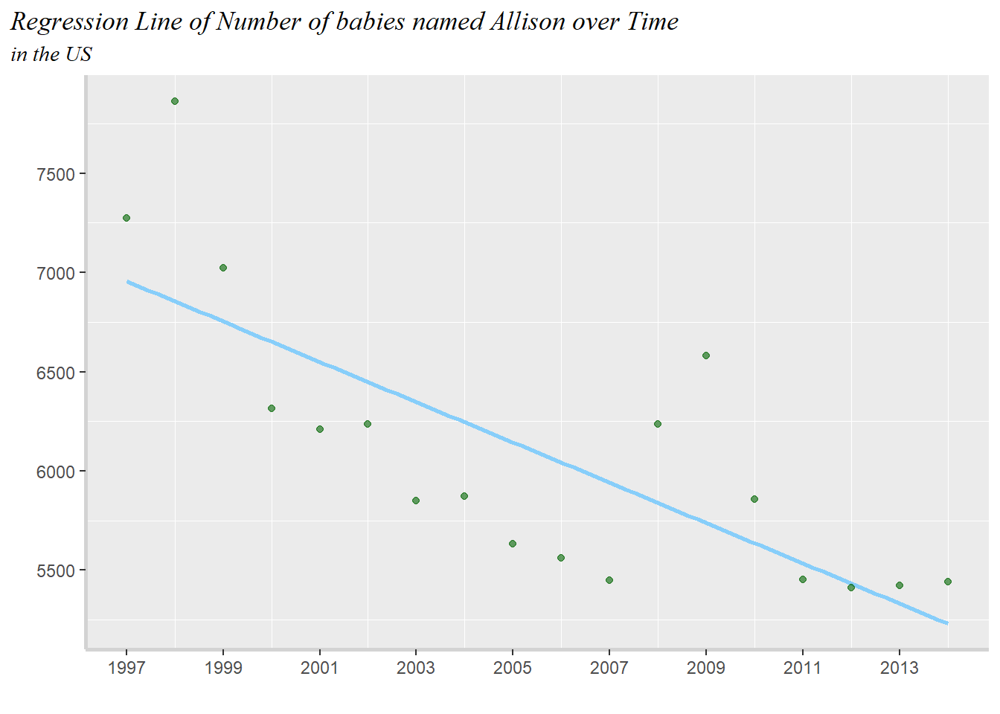
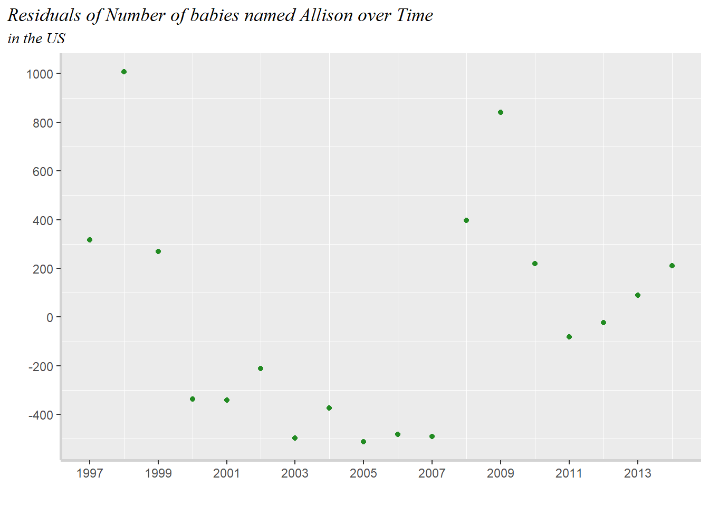
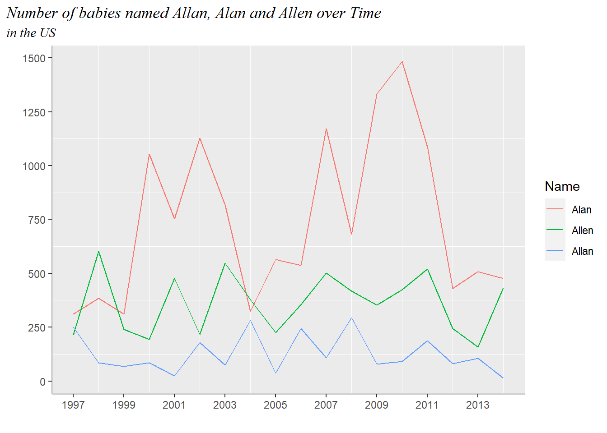

Show code
library(tidyverse)
library(dplyr)
a_names_data <- read_csv(here::here("Labs", "Lab 9", "BabyNames", "StateNames_A.csv"))library(tidyverse)
library(dplyr)
a_names_data <- read_csv(here::here("Labs", "Lab 9", "BabyNames", "StateNames_A.csv"))a_names_data |>
pivot_wider(names_from = Gender,
values_from = Count) |>
mutate(across(.cols = c(F, M),
~ (replace_na(., 0)))) |>
filter(Name == 'Allison') |>
group_by(State) |>
summarize(Name, F = sum(F), M = sum(M), .groups = "rowwise") |>
distinct()# A tibble: 51 × 4
# Rowwise: State
State Name F M
<chr> <chr> <dbl> <dbl>
1 AK Allison 232 0
2 AL Allison 1535 0
3 AR Allison 1198 0
4 AZ Allison 1880 0
5 CA Allison 12413 0
6 CO Allison 1594 0
7 CT Allison 1099 0
8 DC Allison 321 0
9 DE Allison 294 0
10 FL Allison 4455 0
# … with 41 more rowsFiltering for female sex only and creating new data set for graphing.
allison_f <- a_names_data |>
filter(Gender == 'F') |>
pivot_wider(names_from = Gender,
values_from = Count) |>
mutate(F = replace_na(F, 0)) |>
filter(Name == 'Allison') |>
group_by(Year) |>
summarize(F = sum(F), .groups = 'rowwise') |>
distinct()ggplot(data = allison_f, aes(x = Year, y = F)) +
geom_line(color = 'darkgreen') +
theme( plot.title.position = "plot",
plot.title = element_text(vjust = 1,
face = "italic",
family = "serif"),
plot.subtitle = element_text(family = 'serif',
face = 'italic'),
axis.line = element_line(color = 'lightgray',
size = 1,
linetype = 'solid'),
panel.grid.major = element_blank()
) +
labs( title = "Number of babies named Allison over Time",
subtitle = 'in the US',
x = " ", y = " " ) +
scale_x_continuous(breaks = seq(1997, 2015, 2)) +
scale_y_continuous(breaks = seq(5000, 8000, 500))
ggplot(allison_f, aes( y = F, x = Year)) +
geom_smooth(method = lm, se = FALSE,
color = 'lightskyblue') +
geom_point(color = 'darkgreen',
alpha = 0.6) +
theme( plot.title.position = "plot",
plot.title = element_text(vjust = 1,
face = "italic",
family = "serif"),
plot.subtitle = element_text(family = 'serif',
face = 'italic'),
axis.line = element_line(color = 'lightgray',
size = 1,
linetype = 'solid'),
panel.grid.major = element_blank()
) +
labs(title = "Regression Line of Number of babies named Allison over Time",
subtitle = 'in the US',
x = " ", y = " " ) +
scale_x_continuous(breaks = seq(1997, 2015, 2)) +
scale_y_continuous(breaks = seq(5000, 8000, 500))`geom_smooth()` using formula 'y ~ x'
al_lm <- lm(F ~ Year, allison_f)
al_lm
Call:
lm(formula = F ~ Year, data = allison_f)
Coefficients:
(Intercept) Year
209689.8 -101.5 al_lm <- broom::augment(al_lm)The estimated regression equation is:
Count of Female(at birth) Allisons = 209689.8 - 101.5(Year)
ggplot(al_lm, aes(x = Year, y = .resid)
) +
geom_point(color = "forestgreen" ) +
theme( plot.title.position = "plot",
plot.title = element_text(vjust = 1,
face = "italic",
family = "serif"),
plot.subtitle = element_text(family = 'serif',
face = 'italic'),
axis.line = element_line(color = 'lightgray',
size = 1,
linetype = 'solid'),
panel.grid.major = element_blank()
) +
labs(title = "Residuals of Number of babies named Allison over Time",
subtitle = 'in the US',
x = " ", y = " " ) +
scale_x_continuous(breaks = seq(1997, 2015, 2)) +
scale_y_continuous(breaks = seq(-600, 1200, 200))
al <- a_names_data |>
filter(Name == c('Allan', 'Alan', 'Allen'))
al_year <- al |>
group_by(Year, Name) |>
summarize(Count = sum(Count),
.groups = 'rowwise')
ggplot(al_year, aes(x = Year, y = Count,
color = fct_rev(reorder(Name,
Count)))) +
geom_line() +
theme( plot.title.position = "plot",
plot.title = element_text(vjust = 1,
face = "italic",
family = "serif"),
plot.subtitle = element_text(family = 'serif',
face = 'italic'),
axis.line = element_line(color = 'lightgray',
size = 1,
linetype = 'solid'),
panel.grid.major = element_blank()
) +
labs(title = "Number of babies named Allan, Alan and Allen over Time",
subtitle = 'in the US',
x = " ", y = " ", color = 'Name') +
scale_x_continuous(breaks = seq(1997, 2015, 2)) +
scale_y_continuous(breaks = seq(0, 1500, 250))
al_state <-
a_names_data |>
pivot_wider(names_from = Gender,
values_from = Count) |>
pivot_wider(names_from = Name,
values_from = M) |>
filter(Year == 2000, (State == 'PA'|State == 'CA')) |>
select(State, Year, Allan, Alan, Allen) |>
group_by(State, Year)|>
summarise(across(.cols = c(Allan, Alan, Allen),
~sum(., na.rm = TRUE)),
.groups ='rowwise')
al_state# A tibble: 2 × 5
# Rowwise: State, Year
State Year Allan Alan Allen
<chr> <dbl> <dbl> <dbl> <dbl>
1 CA 2000 131 579 176
2 PA 2000 12 51 56al_state |>
mutate(Tot = (Allan + Alan + Allen),
across(.cols = c(Allan, Alan, Allen, Tot),
.fns = ~ format(round((./Tot), 3
), nsmall = 3)))# A tibble: 2 × 6
# Rowwise: State, Year
State Year Allan Alan Allen Tot
<chr> <dbl> <chr> <chr> <chr> <chr>
1 CA 2000 0.148 0.653 0.199 1.000
2 PA 2000 0.101 0.429 0.471 1.000